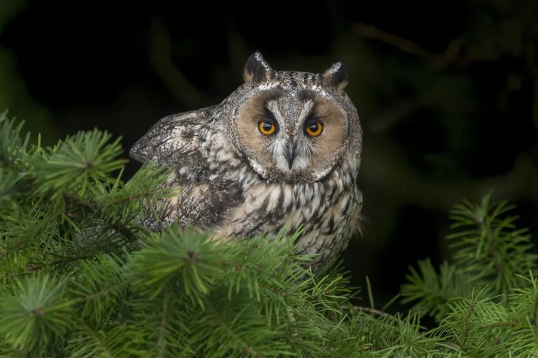

鸟类 · 动物界
长耳鸮 Asio otus

耳羽簇高高竖起的鸮类，一双橙红色眼睛格外醒目，白天常成群栖在树上休息，夜间捕食田鼠和小鸟。
- 分类
- 门脊索动物门纲鸟纲目鸮形目科鸱鸮科属耳鸮属
- 栖息环境
- 森林、农田、草原与城市公园，白天多停在针叶树上休息
- 地理分布
- 欧亚大陆和北美广泛分布，中国各地均有记录，北方多为候鸟
- 保护级别
- IUCN 无危（LC）；中国国家二级保护动物
物种志
长耳鸮体长 31–40 cm，体重约 220–435 g，翼展 86–102 cm。它的脸盘呈黄褐色，边缘有深色羽环，眼睛橙红色，头顶有两簇长长的耳羽，像两只竖起的耳朵；上体棕褐色并密布黑色和白色斑纹，下体淡黄褐色带粗重的纵纹。羽毛柔软，飞行无声。
长耳鸮广泛分布于欧亚大陆和北美，中国各地都有分布，北方种群冬季南迁。它们栖息在森林、农田、草原和城市公园，白天常成群停在针叶树的枝头休息，夜间捕食田鼠、小鼠、小鸟和昆虫。繁殖期利用喜鹊等鸟类的旧巢或树洞产卵，每窝 3–8 枚，孵化约 25–30 天。长耳鸮是控制鼠害的重要天敌，目前被列为无危物种，中国将其列为国家二级保护动物。
形态与习性
- 食性田鼠、小鼠、小鸟和昆虫
- 体长31–40 cm
- 体重约 220–435 g
- 翼展86–102 cm
- 繁殖每窝 3–8 枚卵，孵化约 25–30 天
- 寿命野外约 10 年
- 耳羽头顶两簇长耳羽，受惊时竖得更直
趣味知识
- 长耳鸮头顶的耳羽只是装饰性羽毛，真正的耳朵藏在脸盘两侧。
- 冬季它们常几只到几十只一起栖在同一棵树上过夜。
- 长耳鸮吃田鼠时会连皮整只吞下，再把毛骨吐成食团。
- 它的橙红色眼睛在夜色中十分醒目，是辨认它的好标志。